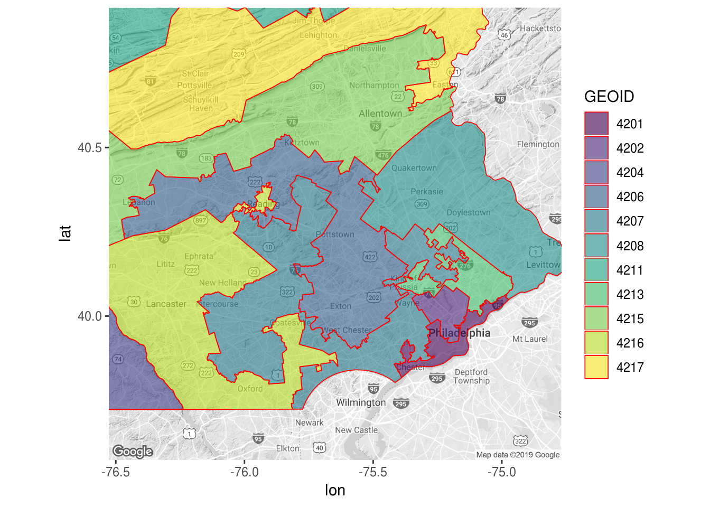
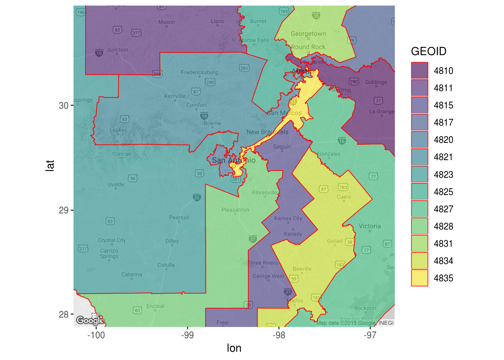

Find Salamander -- Congressional District Gerrymandering
When Republicans or Democrats are in charge, they tend to draw election district boundaries to their favor. This can go very ugly, creating wacky boundaries by a practice called Gerrymandering.
The word “Gerrymander” is a blend of two species: the Massachusetts Governor Elbridge Gerry and a mythological salamander, a dragon-like monster. Governor Gerry signed a bill 200 year ago that drew an state senate election district in a shape resembling a salamander.
Nobody has seen the mythological salamander, but we are quite familiar with the amphibian salamander, which also has a dragon-like shape.
One of my favorite Gerrymandering example is the 6th congressional district of Pennsylvania (115th congress). Check the picture below; you will find two salamanders.

We can visualize the Gerrymandering easily with ggtiger package in R. The figure below shows a few congressional districts near Philadelphia in Pennsylvania for 115th Congress, including the 6th district above and the (in)famous 7th congressional district.
# install ggtiger package from https://github.com/GL-Li/ggtiger
# devtools::install_github("GL-Li/ggtiger")
library(ggtiger)
# use your own Google cloud API to replace Sys.genenv("GOOGLE_API") below
register_google(Sys.getenv("GOOGLE_API"))
library(viridis)
# download map near philly in PA
philly <- get_map("pottstown, PA, usa", zoom = 9, color = "bw")
### congressional district boudaries
ggmap(philly) +
geom_boundary("congressional district", states = "PA",
mapping = aes(fill = ..GEOID..),
alpha = 0.6, color = "red", size = 0.3) +
scale_fill_viridis(discrete = TRUE)
We can do this for any locations, for example Texas. Did you see a salamander with a long tail?
tx <- get_map("san antonio, texas, usa", zoom = 8, color = "bw")
ggmap(tx) +
geom_boundary("congressional district",
mapping = aes(fill = ..GEOID..),
alpha = 0.6, color = "red", size = 0.3) +
scale_fill_viridis(discrete = TRUE)